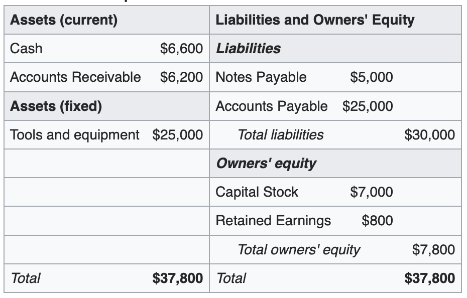
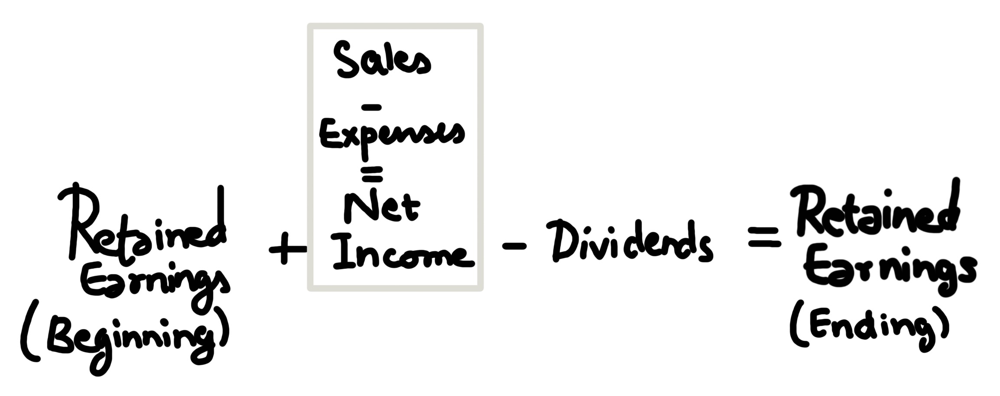
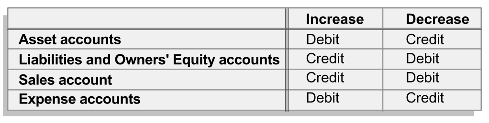

Financial Accounting [WIP]
- Links
- Accounting concepts
- Assets
- Liabilities:
- Equity
- Financial reports
- Balance Sheet
- Income Statement
- Accounting Records
- Cash flow statement
- Revenue and Receivables
Links
1. Reference slidesAccounting concepts
- 1. Entity Concept
- 2. Money Measurement Concept
- 3. Going Concern Concept
- 4. Consistency Concept
- 5. Materiality Concept
Concepts used in Balance Sheet:
- 6. Dual Aspect (Double Entry Bookkeeping)
- 7. Historical cost concept
Concepts used in Income Statement:
- 8. Realization
- 9. Matching Concept
- 10. Conservatism Concept
Assets
- 1. Acquired at measurable cost
- 2. Obtainable / Controlled by the entity
- 3. Expected to produce future economic benefits
- 4. Based on past transaction/event
Types of assets based on Liquidity:
- + Current assets:
- Can be converted into cash within a year
- + Non-current/Fixed assets:
- Cannot be converted to cash instantly within a year
Types of assets based on Tangibility:
- + Tangible: Have physical form
- + Non Tangible: Do not have physical form. Eg: Licence, Fee
Liabilities:
- 1. Probable future sacrifice of economic resources
- 2. Economic resources transferred to another entity
- 3. Sacrifice is current obligation, arising from past txn / event
Types of Liabilities:
- + Current Liabilities: Debts that need to be satisfied within a year
- + Long term liabilities
Equity
Money returned to shareholders if all our assets were turned into cash and all our debts were payed offFinancial reports
Financial reports are used to make business decisions. Three major financial reports are:- 1. Balance Sheet
- 2. Income Statement
- 3. Cash Flow Statement
Balance Sheet
Snapshot of financial health of business at a point in time.ASSETS = EQUITY + LIABILITIES
Format of balance sheet: (src: Wikipedia)

Balance sheet based ratios:
1. Current ratio = Current Assets / Current Liabilities
- - Current ratio more than peers: Locking up potential for productivity
- - Current ration less than peers: Questionable ability to satisfy current obligations
2. Total Debt to Equity = Total Debt / Total Equity
- - Increase in ratio => Increasing strain on entity to make regular payment, thus incresing risk of bankruptcy.
Income Statement
A. Sample Income StatementB. Format of income statement
- Sales
- (COGS) [Cost of Goods sold]
- --------------------------
- Gross Margin
- (Operating Expenses)
- --------------------------
- Operating Profit/Income
- (Interest Expense) [from Debts]
- --------------------------
- Income before Income Tax
- (Income Tax Expense)
- --------------------------
- Income [net profit/loss]
C. Retaied Earnings
This net income is used to update Retained Earnings in Balance Sheet as follows:

- Retained Earnings (beginning) + Net Income - Dividends = Retained Earnings (ending)
D. Making a sale
- + Cash Sale: Cash(Asset) increases; Retained Earning increases
- + Credit Sale: Accounts Receivable(Asset) increases; Retained Earning increases
E. Expenses:
- Prepaid expenses are marked as asset
- Operating Expenses
- - Salaries
- - Utilities
- - Rent Expenses
- - Depreciation
- - License Amortization
- Interest Expenses
- - Short term debt
- - Mortgage
- Tax Expense
- Net book value = Historical Cost - Accumulated Depreciation
F. Income Statement based ratios:
1. Gross Margin % = GM / Sales * 100
- - Increase in GM => Increase in Efficiency
- - Depends on nature of industry, business strategy, capital structure and tax regime
Accounting Records
A. Double-Entry Accounting : Both sides of each transaction are recorded, and at least two accounts are affected.B. Journal Chronological Record of all entities transaction. After analyzing a transaction, a journal entry is prepared using the rule that debits indicate increases in assets and in expenses and credits indicate increases in liabilities, owners' equity and sales.
C. Debits and Credits: Youtube Tutorial

- Debits: Destinations economic benefit can flow to.
- + Eg: Dividends, Expenses, Assets
- + An increase in these would reduce cash and thus amount would be debited.
- Credits: Sources economic benefit can flow from.
- + Eg: Liabilities, Owner's Equity, Revenue
- + An increase would increase cash sources and thus the amount would be credited
Debit and Credit Practice Questions & Solutions
D. Sample Journal Entry [TBD]
E. Ledger: Journal entries are posted into a ledger of T-accounts where 'debit' means left side of the T-account and 'credit' means right side of the T-account.
F. Sample Ledger and T-accounts [TBD]
G. Adjusting Entries Adjusting entries do not involve any economic exchange with a third party. Once all transactions with outside entities are recorded for the period, adjusting entries are made to particular accounts- Eg. Prepaid expenses, warehouse building, store fixtures, franchise fee and taxes payable.
H. Closing Entries : Close out each temporary or income statement account and reset it to a zero balance, in preparation for the next accounting period. A closing entry is made to close or reset all sales and expense accounts to zero.
I. Preparing financial reports : Finally, the balance sheet and income statement are prepared.
Cash flow statement
How much money came in / went out in a time periodA. Classifies and organizes information about the cash flows during an accounting period
- 1. Operations Cash Flow: Money spent on runnning the business. Includes revenue, expenses and taxes
- 2. Investment Cash Flow: Property, Plant, Equipment
- 3. Financial Cash Flow: Loans, Dividends paid to shareholders
There are two formats for the statement of cash flows: the direct method and the indirect method. They differ in their presentation of operating cash flows.
B. Direct Method: Under the direct method, in the operating section, are included a number of line items, each of which is a cash inflow to the reporting entity or a cash. The direct method statement of operating cash flows can be prepared directly from the entries in the cash T-account during the accounting period. [TBD: Add Sample Format]
C. Indirect Method: Operating section starts with the net income and make a series of de-accrual adjustments to it in order to derive the net cash from operations. The indirect method statement of operating cash flows is prepared from the period's income statement accounts and the period's beginning and ending balance sheets. [TBD: Add sample format]
D. Interpretation
Revenue and Receivables
A. Deferred Revenue : Deferred revenue is future revenue that has already been collected but has yet to be earned. Eg. Unredeemed gift certificate, Coupon, Advanced Payment of Magazine Subscription. We donot use this for tax calculations.B. Bad Debts : Setting up ' allowance for bad debt/doubtful accounts' contra-account and 'bad debt expense' account (Income statement)
C. Refunds :
D. Prompt Payment Discounts :
E. Allowances are adjusted at month's end
F. Bad Debt Ratio : A company with a low bad debt ratio believes it is more likely to receive payment of more of its receivables outstanding than a company with a high bad debt ratio. High/Low bad debt ratio indicates company is failing to properly screen potential clients before offering them credit. It might also mean that the company is pursuing less credit-worthy customers in an attempt to generate sales.
- Bad Debt Ratio = (Bad Debt allowances at the end of the period / Gross receivables at the end of the period) x 100
G. Day's receivable ratio : Indicates the average number of days necessary for the company to collect its outstanding accounts receivable. Analysts compare a company's days receivables with its industry peers. The slowing of a company's days receivables or a high days receivables compared to its competitors has a negative impact on the firm's liquidity. An increasing days receivable ratio might also be an indication that more of the receivables will become bad debts.
- Days Receivable Ratio = (Net accounts receivable / Total Sales in the period) x number of days in the period